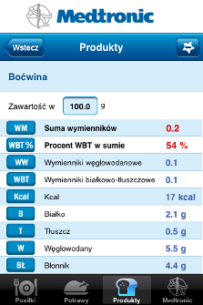
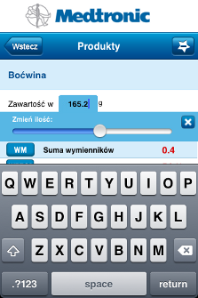
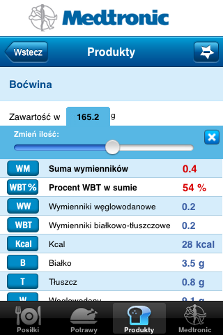

Zmiana wagi na ekranie szczegółów produktu, potrawy lub posiłku:
-
Dotknij pole z aktualną wagą (pokazane na ekranie poniżej).

-
Pod polem z wagą pokaże się suwak do zmiany wagi. W trakcie zmiany wagi aplikacja automatycznie przelicza wartości odżywcze. O zmianie maksymalnej wartości slidera możesz przeczytać poniżej.
-
Jeśli uważasz, że suwak jest zbyt mało precyzyjny, dotknij ponownie pole wagi. Możliwe będzie wtedy wpisanie wagi z klawiatury numerycznej.

-
Aby zamknąć suwak wagi dotknij niebieskiego krzyżyka nad suwakiem.
